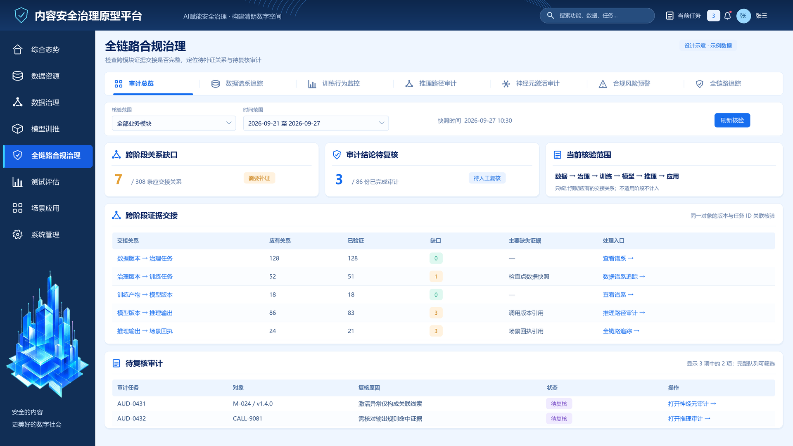

点击图片打开 4K 版，可放大查看每个图标、表格和关系线。图中数据均为设计示例；本交付不代表真实后端已经实现或完成联调。
使用方式：将本文件夹连同原项目、开发规范一起交给 Codex，按实施指令落地。
7 张页面图 + 2 张交互状态图 · 标准版 1920×1080 · 4K 版 3840×2160
点击图片打开 4K 版，可放大查看每个图标、表格和关系线。图中数据均为设计示例；本交付不代表真实后端已经实现或完成联调。
使用方式：将本文件夹连同原项目、开发规范一起交给 Codex，按实施指令落地。